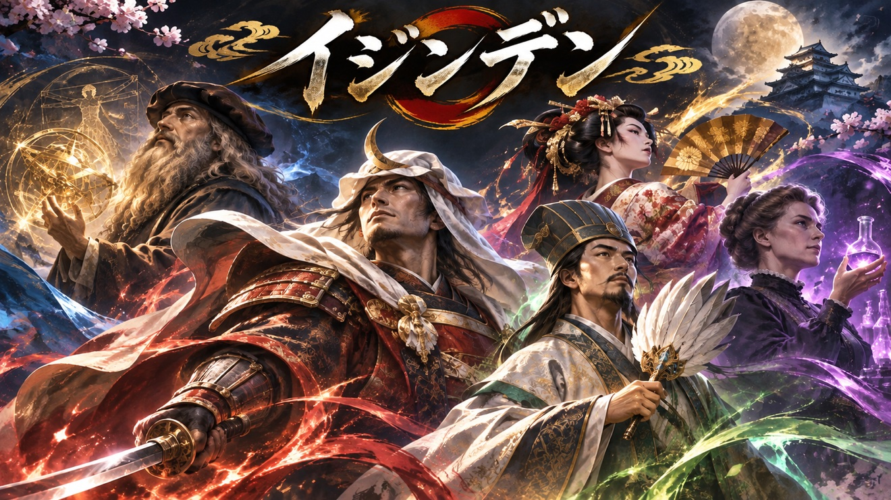

- 準備：手札6枚を引き、山札の上4枚を裏向きの「ガーディアン」として戦場に置く。
- 毎ターン：1枚ドロー（先攻1ターン目だけ無し）→ メインフェイズ。
- マリョク配置（1ターン1回）：手札1枚を魔力ゾーンへ。マリョクのカードは表向き、それ以外は裏向き。表向きマリョクのレベル合計＋裏向き1枚=1 が「魔力レベル」になる。
- イジン召喚（1ターン1回）：同じ色の表向きマリョクが1枚以上あり、魔力レベルがイジンのレベル以上で召喚できる。出たターンは攻撃できない。
- バトル（1ターン1回）：起きているイジン1体以上を同時にアタッカーにする。相手はイジンやガーディアンでブロックできて、ブロックされなかったアタッカーが1体でも解決されたら攻撃側の勝利。
- 勝敗：攻撃を通すか、相手がターン開始時に山札0枚だと勝ち。
- ※全色プール実装済み（紫・赤・黄・青・緑すべてのカードに固有効果を実装。遺業・冥府発動・復元・魔力化・喪神・即応・ダブルプレッシャー・ドレイン・執筆・勝鬨・モータル・装備・航海など）。
- ※一部カードは、公式テキストのうち「カード名の宣言」は公開情報（墓地・戦場）のカード名から選ぶ方式、「ドッペルゲンガー」は裏向きのガーディアンを対象外にするなど、簡易化して実装しているものがある（各カードの詳細に注記あり）。緑では、モーツァルトの「墓地のカードの能力喪失」、シューベルト／ベートーヴェンの「墓地からの移動封じ」、禁制の御殿の「手札に戻らない」効果が未実装だ。
軍団編成
デッキコード（引っ越し）
保存したデッキは、各デッキの「コード」ボタンでコードにできる。そのコードを別の場所（GitHub版など）の軍団編成で読み込むと、同じデッキがそのまま使える。
新しいデッキを作る
最大2色
2人対戦（オンライン）
手札・ガーディアンは自分の画面にのみ表示される。
部屋を作る（ホスト）
部屋に入る（ゲスト）
接続状態：未接続
※一部演出は相手側で簡略表示。切断時の再接続は未対応。
オンライン対戦ロビー
接続状態：接続中…
あなたのデッキ
まだ選んでいない
色を選んで新しく作る
相手のデッキ
相手がデッキを選択中…
先行・後攻（ホストが選択）
どのデッキでダイブする？
② CPUのデッキの色は？
あなたのデッキ：
③ デッキ構築（）
0 枚
同名は4枚まで
対戦開始
CPU（）
イジン
ガーディアン
ハイケイ
魔力ゾーン
あなた（）
イジン
ガーディアン
ハイケイ
魔力ゾーン
あなたの手札（タップで行動を選ぶ）